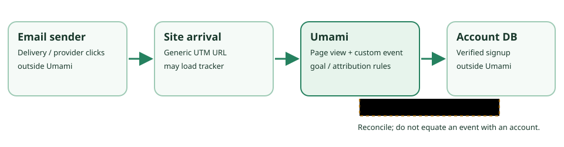

Umami v3.4.0 · tagged-source audit · 8 Oct 2026
Umami can measure a tagged site visit and a signup signal, not a verified newsletter outcome.
A generic UTM link can identify on-site page views from a newsletter campaign. Separately, a site can emit a signup-confirmed event after its own server reports success. Umami can report those records, a goal rate and attribution under defined counting rules. It does not prove message delivery, account creation, revenue or incremental effect. This was source reading, not a deployment or browser test.

The fictional path, edge by edge
Suppose an authorized sender uses https://example.test/library?utm_source=newsletter&utm_medium=email&utm_campaign=october-library. It has no recipient ID. example.test and every action here are fictional. The campaign guide separates the sender's delivery metrics from Umami's on-site measurements and advises stable lowercase tags.
- Send and click are outside Umami.The sender may know delivery and provider click records. Umami cannot see a message impression, identify a unique recipient, or count a click that never loads the site. Repeated and automated provider clicks need separate interpretation. No message was sent.
- A loaded site can send a page view.The collect-data guide puts the tracker in the page head. The v3.4.0 tracker uses the current URL and referrer, automatically tracks a page view, then posts to its collection endpoint. Consent settings, redirects, blockers, navigation and network failure can change what arrives. A clicked URL is not automatically a recorded view.
- The collector extracts UTM values.The tagged collector parses
utm_source,utm_medium,utm_campaign,utm_contentandutm_termfrom the event URL and stores query data. Metric definitions describe association with events. The fictional link provides only three fields. Redirects or query scrubbing must be tested before assuming capture. - A signup event needs site instrumentation.Event docs describe HTML event attributes and
umami.track(...); the collector stores a named custom event. A button-click event means an attempt, not a created account. Emitsignup-confirmedonly after the site reports server-side success, without email, name or order identifiers. Even then it is a browser-side signal that may be missed or duplicated; reconcile it with authoritative account records. No event fired here. - Reports apply different counting rules.The tagged UTM query counts UTM-tagged page-view records; the UTM guide calls them views. Goals divide visitors reaching a selected page or event by visitors in a date range. Attribution assigns first- or last-click credit for a selected outcome. No goal or report output was inspected in a running v3.4.0 instance. Credit is not causal lift.
Do not exchange one count for another
| Count | Meaning here | Not the same as |
|---|---|---|
| UTM views | Tagged page-view records in the v3.4.0 UTM query | Unique email recipients or provider clicks |
| Visitors / visits | Hash-derived sessions / shorter windows per metric definitions, collector and stats query | Identifiable people or verified customers |
| Custom events | Instances of a named on-site signal | Confirmed database accounts without reconciliation |
| Goal / attribution | Selected denominator and first-/last-click credit rule | Incremental effect, revenue or ROI |
The tagged collector builds session IDs from website ID, IP, user agent, a rotating salt and optional distinct ID; visit IDs have a 30-minute expiry. “One visitor” is an analytics rule, not one person. The metric reference's broad “views” wording does not supersede the narrower tagged UTM page-view query.
Self-hosted licence and operating boundary
The v3.4.0 root LICENSE contains MIT terms and its package manifest declares MIT and version 3.4.0. This describes the tagged repository application, not Umami Cloud, an email sender, hosting or dependencies. Cloud includes managed and Cloud-only capabilities; this report is about self-hosting.
The install guide says Node 18.18+ and PostgreSQL 12.14+, and warns operators to change the initial admin/umami credentials. The tagged Compose example runs an app on port 3000 with PostgreSQL 15, a secret and persistent volume. Its app image still says latest: pin a tested version or digest for a reproducible pilot. Replace example secrets, restrict access, update the service, and back up and restore-test the database and configuration. The tracker guide advises checking requests when data does not appear and notes ad blockers.
A 30 June 2026 advisory lists a high-severity cache-token/share-token replay as affecting “latest,” without a patched version. This metadata appears stale for that specific replay: the tagged auth source checks share-token type, while the collector creates a different cache-token type. That is a source-level mitigation observation, not an exploit test or general safety claim. Review the deployed build and advisory disposition before collecting sensitive data.
Privacy and notice are operator decisions
The tracker sends URL and referrer; the collector stores query strings. An email=... query, personal token, name in an event label, or personal event property can enter analytics and exports. The event guide's email-valued property example is a capability and a hazard, not a recommendation. Use generic UTM values; scrub personal parameters before collection; avoid raw email and recipient IDs; audit access and exports. Tracker configuration allows search-parameter exclusion and a before-send hook, but excluding every query parameter would remove the simple UTM input. A selective scrub needs testing. Do not enable distinct IDs simply for easier matching without a privacy decision. The operator decides lawful notice, consent, retention, access, location and disclosure for the actual deployment. Cookie-free or IP-not-stored marketing language is not a compliance finding.
Controlled test before using the numbers
| Question | Private synthetic check | Decision limit |
|---|---|---|
| Did tagged visits arrive? | Open a fake tagged link in isolated pinned v3.4.0. Inspect expected page-view and UTM row; repeat with reload, redirect, no script and blocker. | Views are not recipient or delivery counts. |
| Did a successful site action register? | Exercise fake success/failure, duplicate click, return visit and navigation. Compare captured events, goal and attribution reports with known inputs. | A browser event is not the account database. |
| Did the campaign create a business outcome? | Reconcile de-identified aggregates with private synthetic account and sender records under a matching/retention policy. Use a permissioned controlled comparison if lift is required. | Umami alone cannot establish revenue, ROI or causation. |
No runnable fixture was available for this run. Documentation and code were not substituted for observed behavior. The next step is an isolated pinned app, fake site, database and browser test with known expected records.